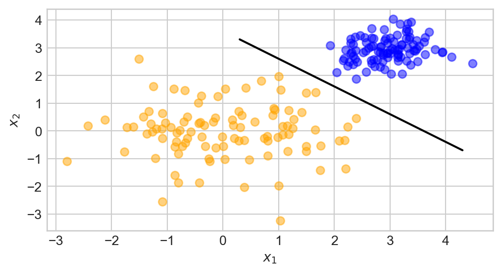

Welcome to CSCI 0451!
Machine learning is used for…
…predictions and recommendations for life-changing decisions: housing, healthcare, criminal justice.

Machine learning is used for…
…search engines, smart homes, computer vision, speech-to-text, scientific discovery, driver assistance systems…


Blog Posts
- Implement algorithms in source (
.py) files. - Perform experiments in Jupyter notebooks.
- Create figures, add expository prose, etc.
- Render your notebooks into a blog using the Quarto publishing engine.
- Host source code and rendered blog on GitHub.

Feedback on blog posts via Hypothes.is

Feedback on source code

NYT, 1957

What We Are Actually Talking About
\[\mathbf{w}^{(t+1)} = \mathbf{w}^{(t)} + \mathbb{1}(y_i \langle \mathbf{w}^{(t)}, \mathbf{x}_i \rangle < 0)y_i \mathbf{x}_i\]
NYT, 2022